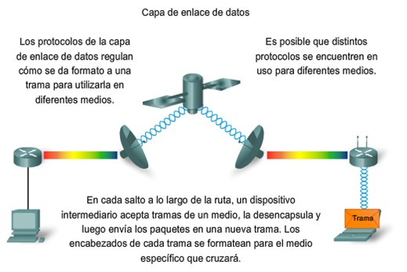
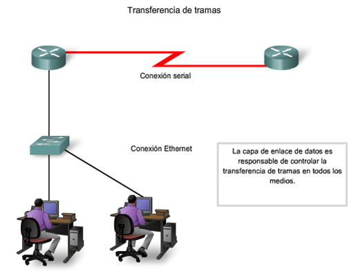
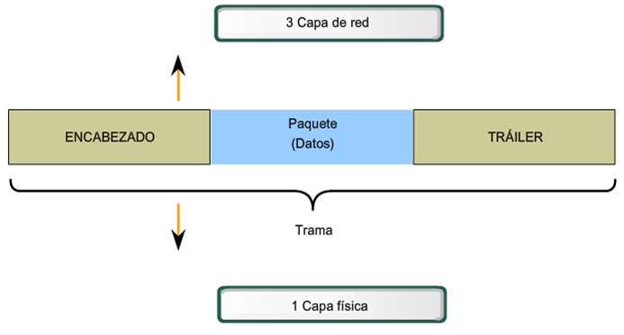
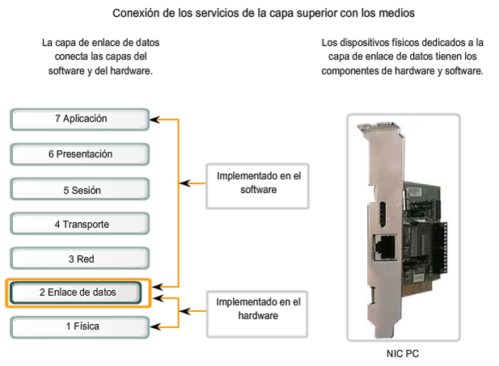
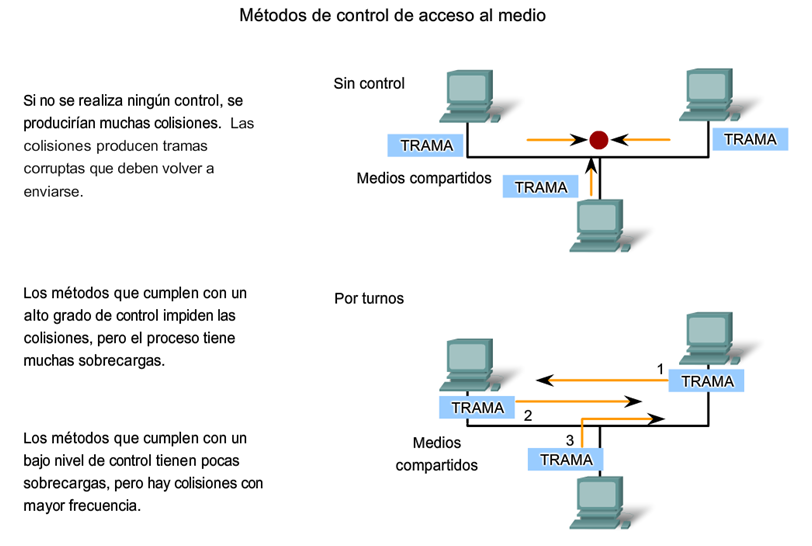
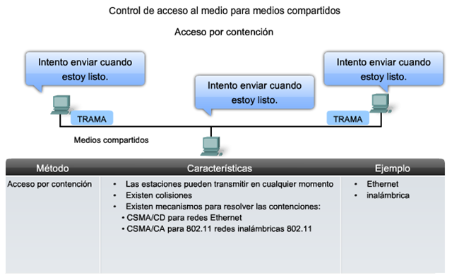

- [libro cakephp](http://book.cakephp.org/2.0/_downloads/es/CakePHPCookbook.pdf)
- [Presentacion 1](./cakephp.ppt)
- [Presentacion 2](./CakePHP-Lectures.ppt)
La capa de enlace de datos proporciona un medio para intercambiar datos a través de medios locales comunes. La capa de enlace de datos realiza dos servicios básicos:

La capa de enlace de datos es responsable del intercambio de tramas entre nodos a través de los medios de una red física.
Es probable que numerosos Protocolos de capa de enlace de datos se estén usando para transportar paquetes IP a través de varios tipos de LAN y WAN. Este intercambio de paquetes entre dos hosts requiere una diversidad de protocolos que debe existir en la capa de enlace de datos. Cada transición a un router puede requerir un protocolo de capa de enlace de datos diferente para el transporte a un medio nuevo.
Los protocolos de la Capa 2 especifican la encapsulación de un paquete en una trama y las técnicas para colocar y sacar el paquete encapsulado de cada medio. La técnica utilizada para colocar y sacar la trama de los medios se llama método de control de acceso al medio.
Los métodos de control de acceso al medio descritos en los protocolos de capa de enlace de datos definen los procesos por los cuales los dispositivos de red pueden acceder a los medios de red y transmitir marcos (frames) en diferentes entornos de red.
El adaptador (NIC) administra la trama y el control de acceso a los medios.
A medida que el router procesa tramas, utilizará los servicios de la capa de enlace de datos para recibir la trama desde un medio, desencapsularlo en la PDU de la Capa 3, reencapsular la PDU en una trama nueva y colocar la trama en el medio del siguiente enlace de la red.

La Capa de enlace de datos prepara un paquete para transportar a través de los medios locales encapsulándolo con un encabezado y un tráiler para crear una trama. la trama de la capa de enlace de datos incluye:

La capa de enlace de datos existe como una capa de conexión entre los procesos de software de las capas por encima de ella y la capa física debajo de ella. Como tal, prepara los paquetes de capa de red para la transmisión a través de alguna forma de medio, ya sea cobre, fibra o entornos o medios inalámbricos. El software asociado con la NIC (Network Interface Controller) permite que la NIC realice sus funciones de intermediara preparando los datos para la transmisión y codificando los datos como señales que deben enviarse sobre los medios asociados.
NOTA: La nic es un controlador de interfaz de red, conocido como: “tarjeta de interfaz de red”, “LAN adaptador”; hardware informático que conecta un ordenador a una red de ordenadores.

Para sostener una gran variedad de funciones de red, la capa de enlace de datos a menudo se divide en dos subcapas: una subcapa superior y una sub capa inferior.
coloca información en la trama que identifica qué protocolo de capa de red está siendo utilizado por la trama. Esta información permite que varios protocolos de la Capa 3, tales como IP e IPX, utilicen la misma interfaz de red y los mismos medios. Control de acceso al medio
proporciona a la capa de enlace de datos el direccionamiento y la delimitación de datos de acuerdo con los requisitos de señalización física del medio y al tipo de protocolo de capa de enlace de datos en uso. Los protocolos en la capa de enlace de datos definen las reglas de acceso a los diferentes medios.

Métodos básicos de control de acceso al medio para medios compartidos:
![acceso-controlado.png]

En CSMA/Detección de colisión (CSMA/CD), el dispositivo monitorea los medios para detectar la presencia de una señal de datos. Si no hay una señal de datos, que indica que el medio está libre, el dispositivo transmite los datos. Si luego se detectan señales que muestran que otro dispositivo estaba transmitiendo al mismo tiempo, todos los dispositivos dejan de enviar e intentan después. Las formas tradicionales de Ethernet usan este método.
En CSMA/Prevención de colisiones (CSMA/CA), el dispositivo examina los medios para detectar la presencia de una señal de datos. Si el medio está libre, el dispositivo envía una notificación a través del medio, sobre su intención de utilizarlo. El dispositivo luego envía los datos. Este método es utilizado por las tecnologías de redes inalámbricas 802.11.
En conexiones punto a punto, la Capa de enlace de datos tiene que considerar si la comunicación es half-duplex o full-duplex.